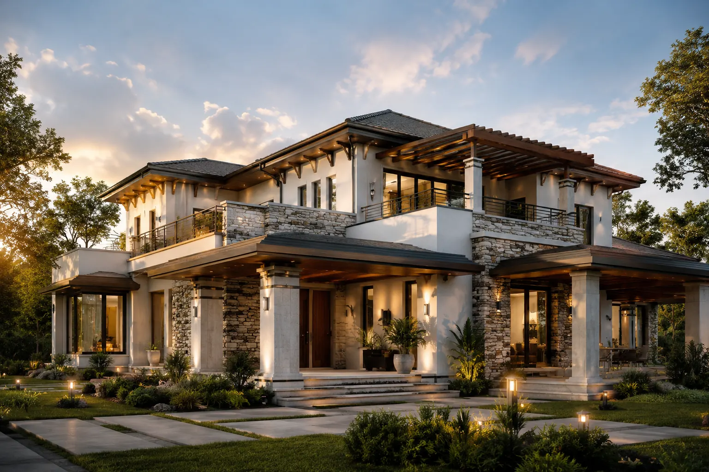
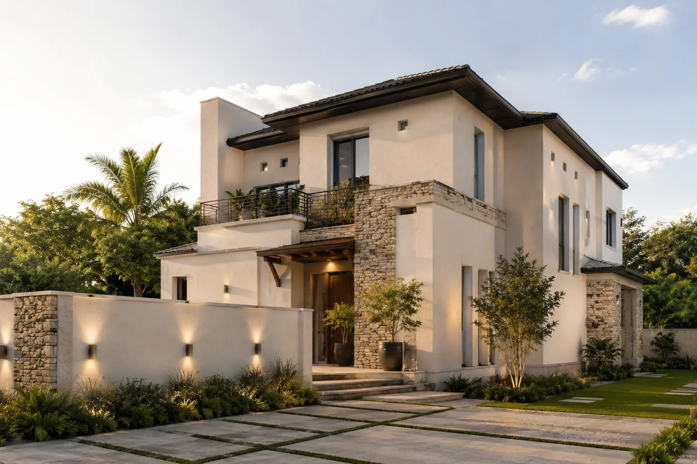
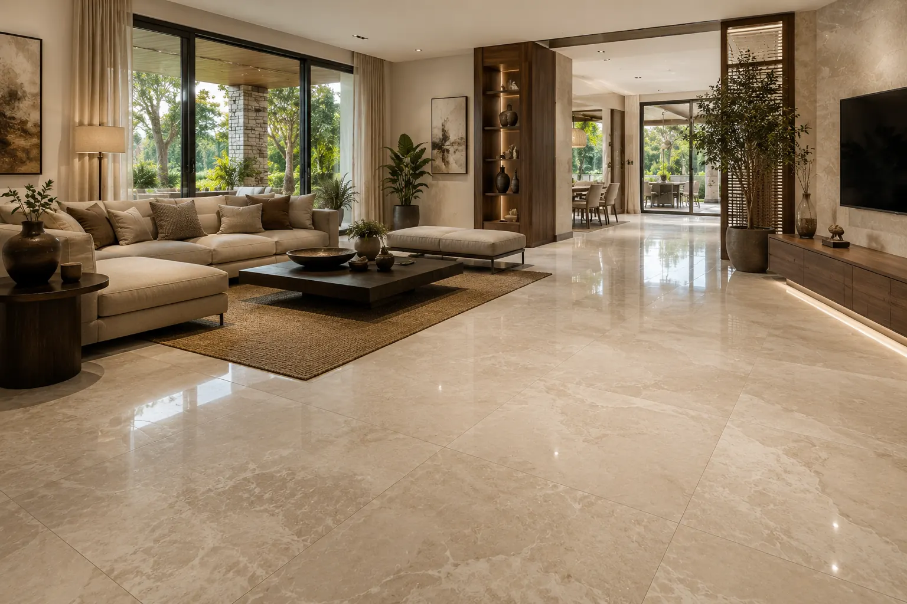
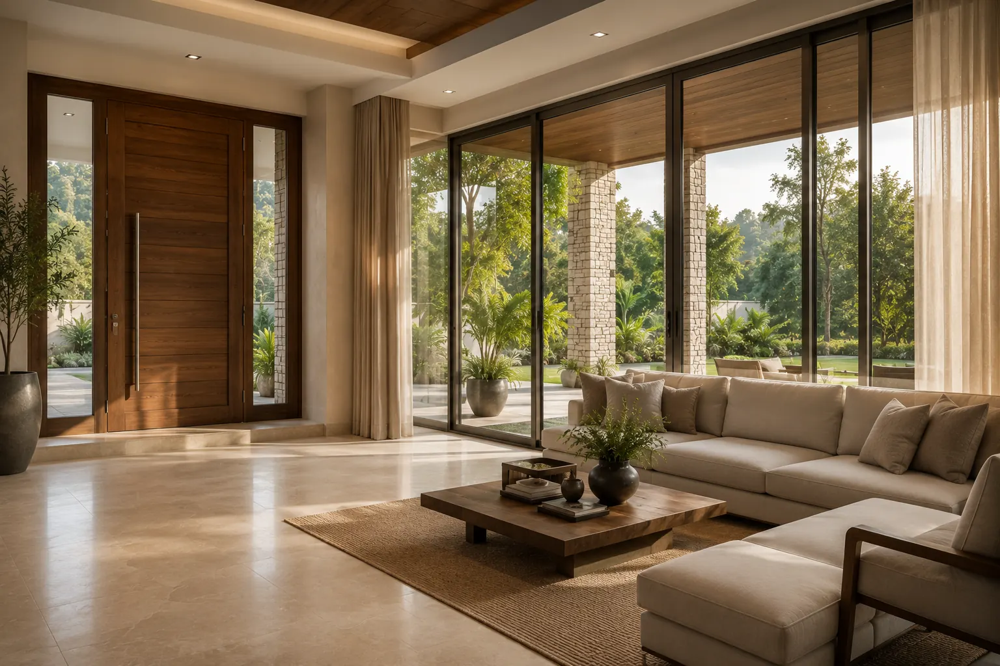
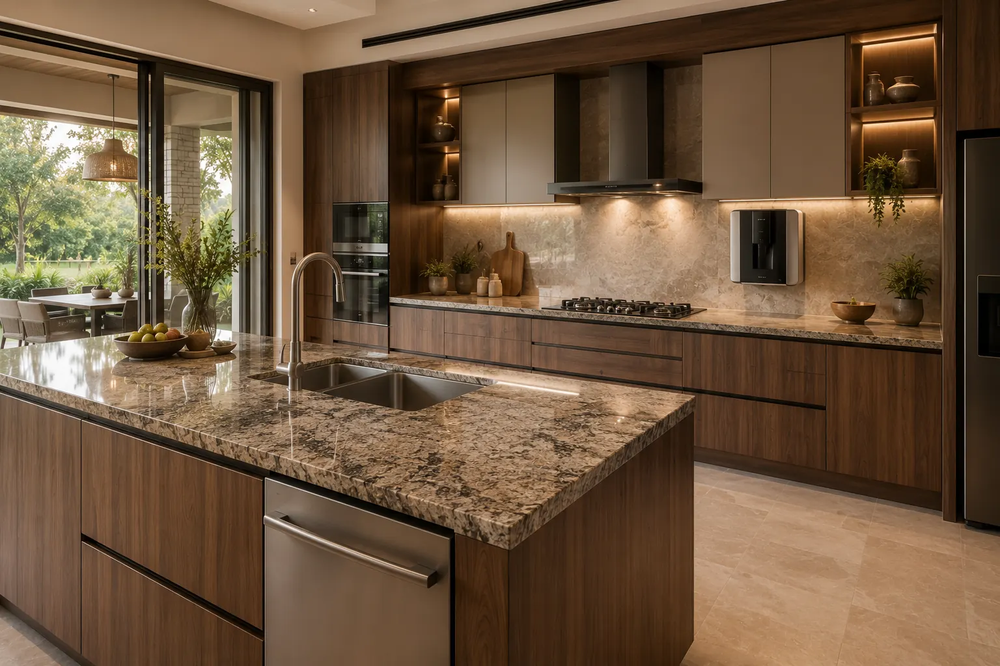
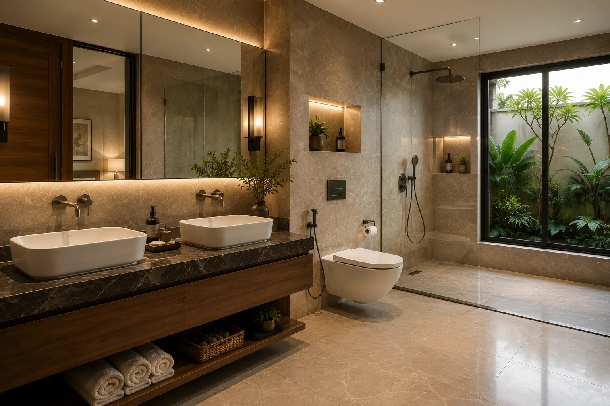
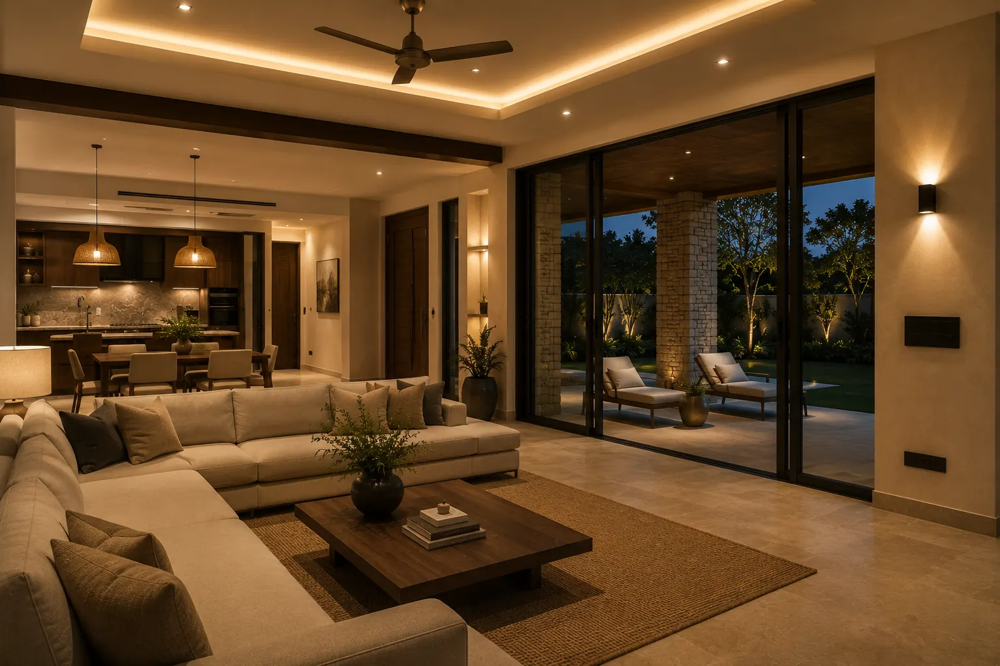
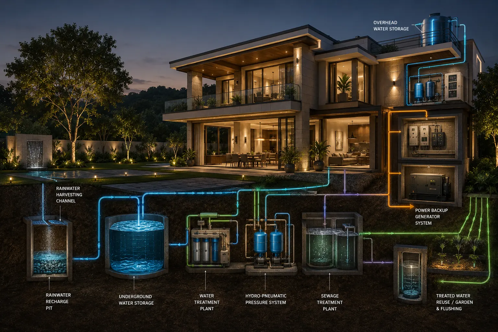
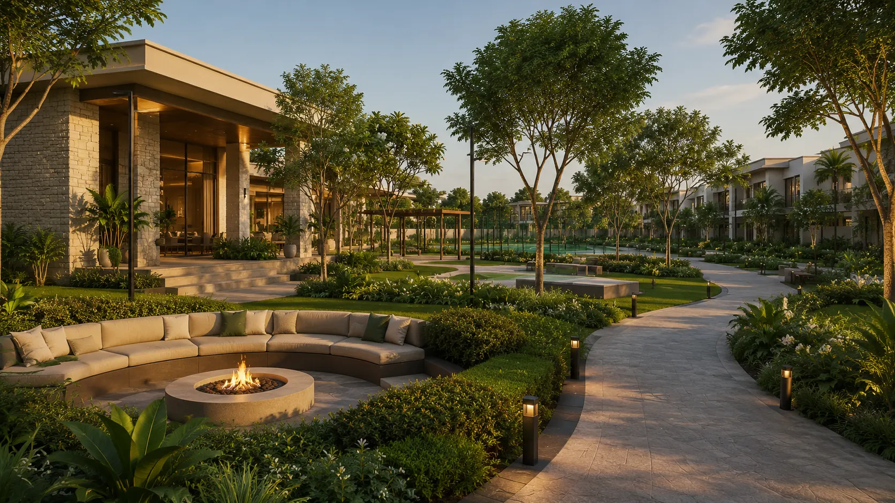
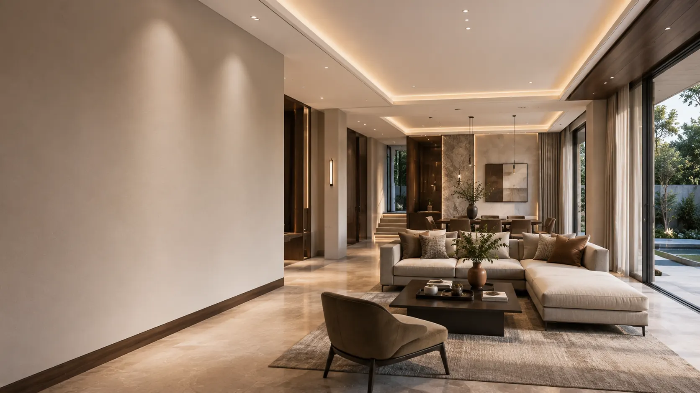

Structural Integrity
Seismic-resistant RCC frames designed to exceed national safety standards, ensuring a foundation as solid as the earth itself.
Construction Highlights
Seismic-resistant RCC frames designed to exceed national safety standards, ensuring a foundation as solid as the earth itself.
Sourced with ecological mindfulness, our materials blend raw tactile beauty with industrial-grade durability.
The final layer of luxury is found in the details, with hand-finished textures and high-precision artisanal fittings.

01 Structure
The structure package is engineered around stable foundations, seismic-ready RCC framing, pre-emptive termite protection, and a carefully layered roofing system that supports long-term durability.
01 Soil Treatment & Foundation
Black cotton soil is removed up to hard strata, with retaining or CRS wall support up to plinth level, then compacted morrum backfilling, plinth beam, and grade slab construction.
02 Anti-Termite Protection
Approved chemical soil treatment is applied before the grade slab stage, with post-construction drilling and emulsion injection at basement junctions for continued termite resistance.
03 Superstructure & Roof
Seismic-compliant RCC framing is paired with anchored MS columns, aligned rafters and purlins, waterproof polypropylene sheet layering, and interlocking cement roof tiles for a premium finished envelope.
02 Walls & Plaster
Masonry, plastering, reinforcement bands, and waterproof exterior treatments are composed as one complete envelope system to support durability, thermal comfort, and crack resistance.

Exterior Walls
Red brick masonry is laid over a concrete DPC bed, with 9-inch external wall thickness, concrete stiffener bands at 1.0m intervals, and double coat cement plaster at approximately 18 to 20mm total thickness.
Interior Walls
Internal partition walls use 4-inch brick masonry with single coat cement plaster around 12 to 15mm, then putty or skim coat preparation for a uniform primer-and-emulsion-ready finish.
Boundary Wall & QC
RCC columns with masonry infill, stiffener bands, cement mortar plaster on both sides, waterproof exterior paint, and expansion joints help absorb thermal movement while maintaining edge-to-edge consistency.
03 Flooring & Tiling
Flooring is organized by area use, balancing premium visual finish with wet-area safety, drainage, and long-term durability across both interior and exterior touchpoints.

Premium vitrified flooring in large 800×800mm or 600×600mm formats with a polished finish aligned to the overall project palette.
Matching premium vitrified flooring with the option for tile or wood-finish skirting depending on the final interior language.
Anti-skid tiles or full-body vitrified finish with proper slope planning and drainage protection for outdoor use.

04 Doors, Windows & Glazing
Door and window specifications are selected to balance smooth daily operation, refined appearance, reliable hardware, and better light, ventilation, and sound control where needed.
Main Entrance & Internal Doors
Main doors combine hardwood or engineered wood frames, veneer finish, locks, hinges, handles, and deadbolt-ready hardware, while internal flush doors retain the same premium language through veneer or laminate finishes.
Windows & Glass
uPVC frames in sliding or casement configurations, mosquito mesh provision, tempered glass for larger windows, and double-glazed units where acoustic performance is needed create a more composed living environment.
05 Culinary Space
The kitchen package is planned around durable countertops, efficient utility points, and a polished everyday workflow that feels premium in use as well as in finish.
Granite or quartz slab, approximately 20 to 30mm thick, with polished edges.
Stainless steel under-mount sink in single or double bowl configurations depending on layout.
Provision for chimney or exhaust, dishwasher or washing machine, and water purifier.

Quality Control
Counter slope checked, cabinet alignment verified, and sink leakage plus hardware load tested before handover.
Standards referenced: IS 1062, IS 303, IS 1237
06 Sanitary, Plumbing & Bathrooms
Bathroom and plumbing specifications combine premium sanitary selections, concealed service routing, and durable drainage systems for a cleaner, more reliable daily experience.
Wall-hung, counter, or under-counter wash basins with Western WC and dual-flush provisions.
Premium chrome-plated, brushed, or matte black mixers, showers, and taps from trusted brands.

Plumbing & Drainage
Concealed CPVC or PVC plumbing, sewer drainage in PVC or HDPE, and rainwater lines planned in line with regulatory requirements.
Standards referenced: IS 1742, IS 10144, IS 4985, IS 1785
07 Electrical, Lighting & Power
Electrical planning is organized around concealed wiring, premium switchgear, appliance-ready power points, and LED-based lighting that keeps everyday living efficient, safe, and quietly refined.

IS and BIS certified copper wiring is routed discreetly through the villa with load planning considered zone by zone.
Modular switches from brands such as Legrand, Schneider, or Havells are planned for reliable daily use and a more polished interface.
Dedicated power points are provided for ACs, refrigerators, microwaves, kitchen appliances, and other high-usage residential needs.

08 Utility Services
Utility planning is organized to support long stays with dependable backup power, pressure-balanced water systems, treated supply lines, sewage reuse, and rainwater management built into the larger community network.
01 Power & Water Systems
DG backup, villa-level overhead tanks, underground community sumps, filtered drinking water provision, and hydro-pneumatic pressure support are planned as the core utility backbone.
02 Sewage & Rainwater
Sewage Treatment Plant output is reused for flushing and landscaping, while rooftop harvesting and recharge pits distribute rainwater recovery across the project.
03 Quality Control
Generator load checks, water quality analysis, and STP treated-water verification help confirm that the utility systems perform consistently before occupancy.
09 Amenities & Common Areas
Shared spaces are designed around landscaped leisure, active recreation, community use, and daily comfort, while security and pool systems work quietly in the background to support the experience.

Landscaped gardens with native species, walking paths, and seating zones create a calmer outdoor rhythm across the community.
A clubhouse with multipurpose hall, indoor games, badminton court, skating ring, and branded gym equipment supports active everyday use.
Community spaces are planned to feel social, spacious, and usable across leisure, fitness, and family-oriented routines.
10 Finishes, Painting & Aesthetics
The finishing palette is designed for smoother surfaces, weather-ready performance, and a cleaner premium visual language across interiors, exteriors, and exposed metal elements.
Two coats of putty, one coat of interior primer, and two coats of Tractor emulsion build a smoother, leveled base with a refined finish.
Texture base coat, exterior-grade primer, and Apex Suprema or Apex Ultima finish layers help protect the facade from water and UV exposure.
Exposed metal elements receive two coats of enamel paint to retain consistency, protection, and cleaner detailing over time.

Quality Control
Paint shade consistency, adhesion performance, and weatherproof coating integrity are checked before final handover.
Brand references: Asian Paints Tractor Series, Asian Paints Apex Series